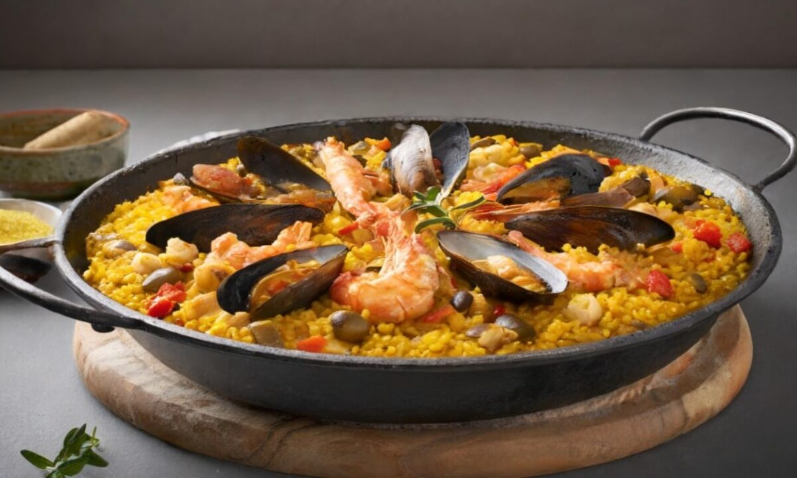
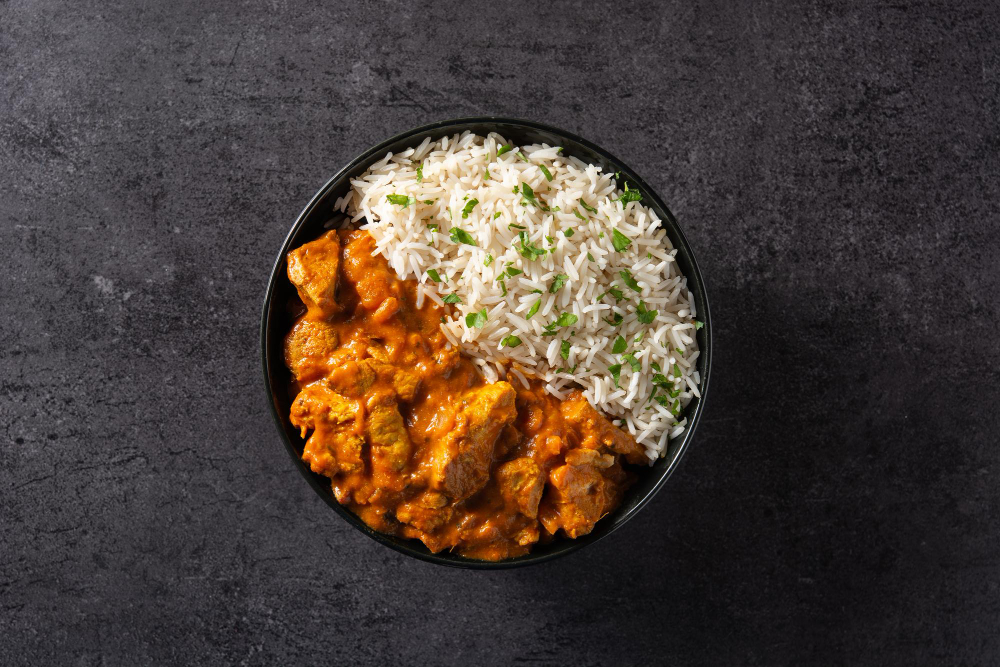
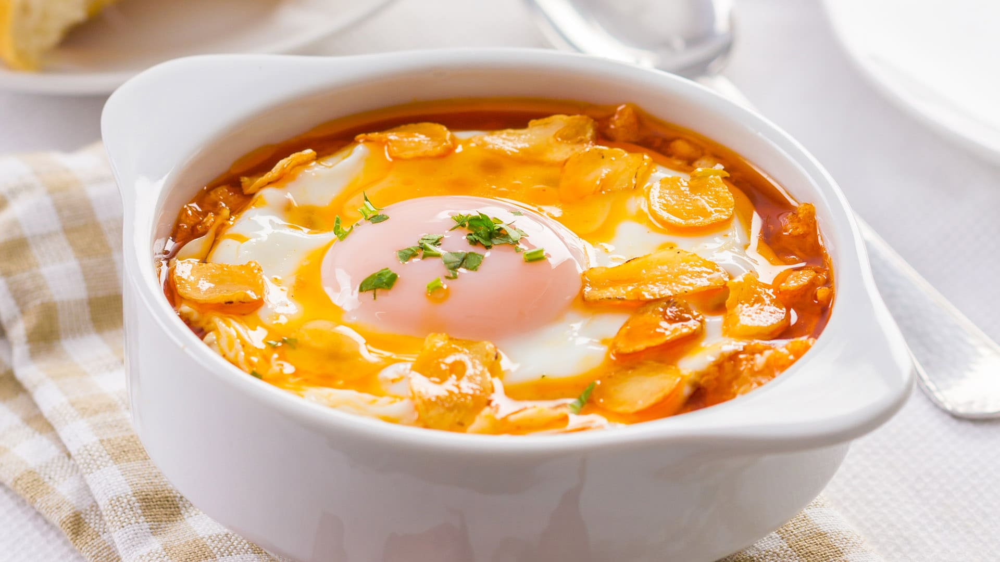

Recetas de Cocina
Paella Valenciana

Ingredientes:
- 400 g de arroz
- 800 ml de caldo de pollo o pescado
- 200 g de conejo troceado
- 200 g de pollo troceado
- 150 g de judía verde (ferraura)
- 100 g de garrofón
- 2 tomates maduros
- 1 pimiento rojo
- 2 dientes de ajo
- Aceite de oliva
- Azafrán o colorante
- Sal y pimienta
Preparación:
- Calienta aceite en una paellera, dora el pollo y el conejo. Retira y reserva.
- Añade las judías verdes, el pimiento, el ajo y el tomate. Cocina hasta reducir.
- Añade el arroz y mezcla. Incorpora la carne reservada.
- Vierte el caldo caliente, añade el garrofón y el azafrán. Cocina 20 minutos.
- Deja reposar y sirve.
Enchiladas Verdes

Ingredientes:
- 12 tortillas de maíz
- 500 g de pechuga de pollo cocida y desmenuzada
- 400 g de tomatillo
- 2 chiles serranos
- 1 diente de ajo
- ½ cebolla
- 200 g de crema
- 200 g de queso fresco desmenuzado
- Aceite vegetal
- Sal
Preparación:
- Cocina los tomatillos y chiles. Licua con cebolla, ajo y sal.
- Fríe las tortillas brevemente en aceite.
- Rellena cada tortilla con pollo y enrolla.
- Cubre con salsa verde, crema y queso fresco.
Curry de Pollo con Arroz Basmati

Ingredientes:
- 500 g de pechuga de pollo
- 1 cebolla grande
- 2 dientes de ajo
- 1 trozo de jengibre fresco (2 cm)
- 2 cucharadas de curry en polvo
- 400 ml de leche de coco
- 300 g de arroz basmati
- Aceite vegetal
- Sal y pimienta
Preparación:
- Sofríe el pollo en aceite. Retira y reserva.
- Añade cebolla, ajo, jengibre y curry. Incorpora leche de coco y cocina.
- Hierve el arroz basmati.
- Añade el pollo y cocina todo junto.

Ingredientes:
- 8 dientes de ajo
- 150 g de pan duro
- 1 litro de caldo de pollo
- 4 huevos
- 100 g de jamón serrano en taquitos
- 1 cucharada de pimentón dulce
- Aceite de oliva
- Sal y pimienta
Preparación:
- Sofríe el ajo en aceite. Añade el pimentón y pan.
- Vierte el caldo y cocina 15 minutos.
- Añade jamón y huevos. Cocina hasta que las claras se cuajen.
Tiramisú Clásico

Ingredientes:
- 500 g de queso mascarpone
- 4 huevos
- 100 g de azúcar
- 200 g de bizcochos de soletilla
- 1 taza de café fuerte
- 50 ml de licor Amaretto
- Cacao en polvo
Preparación:
- Mezcla yemas con azúcar y mascarpone. Incorpora claras montadas.
- Moja los bizcochos en café y Amaretto. Coloca en un molde.
- Cubre con crema y repite capas. Refrigera 4 horas.
- Antes de servir, espolvorea con cacao.